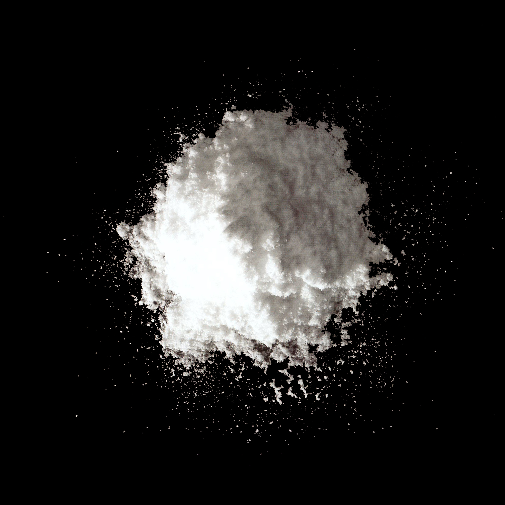

Disodium inosinate

4691-65-0
Synonyms or siblings
Disodium 5'-inosinate, Sodium 5'-inosinate, Disodium inosinate, 5'-monophosphate, Sodium inosinate
Funtion
Appeal - Flavor Enhancer
Description
Disodium inosinate enhances umami flavor, especially with MSG, and is found in ramen, chips, and sauces. Naturally in some foods, it’s mainly produced from corn syrup. It’s safe in small amounts but should be limited by those with gout.
다양한 이름
이노신산이나트륨, 5'- 이노신산이나트륨, 이노신-5'-인산나트륨염, 5'- 이노신산이나트륨염, 디 소듐 5'-IMP
기능
향미증진제
설명
이노신산이나트륨은 가다랑어의 정미 성분인 이노신산을 추출해서 만든 것으로 인스턴트 라면, 감자 칩 및 기타 다양한 스낵에서 흔히 볼 수 있는 식품 첨가물이다. 감칠맛을 제공하기 위해 MSG와 시너지 효과를 내는 향미 강화제로 사용되기도 한다. 이노신산이나트륨은 물에 잘 녹으며 가열에서도 비교적 안정적이라는 특징을 갖는다.